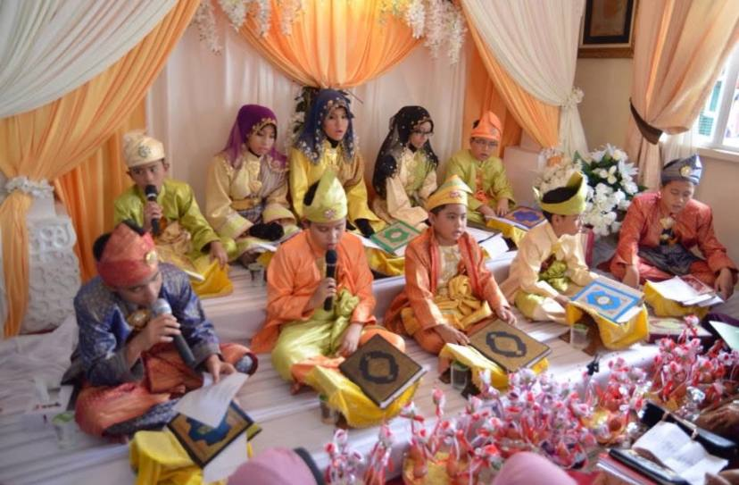

Achievement
- Diploma: Number 1 of the Informs Digital Innovation Colloquium 2024, Category B
- Qhatam Al-Quran: At the age of 9 years old
- Head of internship: Internship at State Record Repository in 2024
Qhatam Al-Quran Ceremony

Qhatam Al-Quran Ceremony
2012
Winning the Informs Digital Innovation Colloquium 2024, Category B
Receiving the winning prize
Miss Suhaida, Dr. Susan Hydra, Muhammad Amierul, Rusydan, Mohamad Nurthasnif Zaffran and Amirul Hasyim.